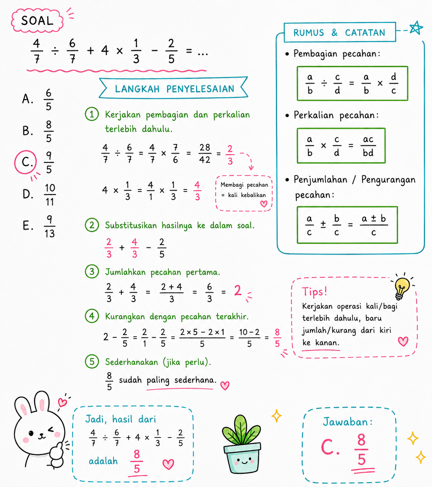

TIU — Operasi Campuran Pecahan (Bagi, Kali, Tambah, Kurang)
Kategori: TIU — Operasi Bilangan
Tingkat: Sedang
ID Soal: 15dcf6b8
Soal
Hasil dari $\dfrac{4}{7} \div \dfrac{6}{7} + 4 \times \dfrac{1}{3} - \dfrac{2}{5} = \;?$
- a. 6/5
- b. 8/5 ✅
- c. 9/5
- d. 10/11
- e. 9/13
Aturan yang Dipakai
- × dan ÷ dikerjakan dulu, dari kiri ke kanan.
- + dan − dikerjakan setelahnya, dari kiri ke kanan.
- Bagi pecahan = kali dengan kebalikannya: $\dfrac{a}{b} \div \dfrac{c}{d} = \dfrac{a}{b} \times \dfrac{d}{c}$.
Pembahasan
Langkah 1 — Hitung $\dfrac{4}{7} \div \dfrac{6}{7}$
$$\frac{4}{7} \div \frac{6}{7} = \frac{4}{7} \times \frac{7}{6} = \frac{4 \times 7}{7 \times 6} = \frac{4}{6} = \frac{2}{3}$$
Langkah 2 — Hitung $4 \times \dfrac{1}{3}$
$$4 \times \frac{1}{3} = \frac{4}{3}$$
Langkah 3 — Substitusi hasil ke soal
$$= \frac{2}{3} + \frac{4}{3} - \frac{2}{5}$$
Langkah 4 — Jumlahkan dua pecahan dengan penyebut sama dulu
$$\frac{2}{3} + \frac{4}{3} = \frac{6}{3} = 2$$
Langkah 5 — Kurangkan dengan $\dfrac{2}{5}$
Samakan penyebut ke 5:
$$2 = \frac{10}{5}$$
$$\frac{10}{5} - \frac{2}{5} = \frac{8}{5}$$
Jawaban
$$\boxed{b. \; \frac{8}{5}}$$
Catatan Visual

Konsep Kunci
- Bagi pecahan → balik penyebut & pembilang pembaginya, lalu kali.
- Bilangan bulat × pecahan → kalikan bilangan bulat dengan pembilang saja. $4 \times \dfrac{1}{3} = \dfrac{4}{3}$ (bukan $\dfrac{4}{12}$).
- Bilangan bulat sebagai pecahan → $2 = \dfrac{2}{1} = \dfrac{10}{5}$ kalau mau samakan dengan penyebut 5.
- Strategi: kalau ada pecahan dengan penyebut sama (di sini $\dfrac{2}{3}$ dan $\dfrac{4}{3}$), jumlahkan dulu — lebih simpel.
Jebakan Umum
- ❌ Tidak mendahulukan × dan ÷ → langsung jumlahkan dari kiri ke kanan = jawaban salah.
- ❌ Salah membalik pecahan saat bagi → membalik yang dibagi, padahal yang dibalik adalah pembagi (yang di belakang ÷).
- ❌ $4 \times \dfrac{1}{3} = \dfrac{4}{12}$ → SALAH. Yang benar $\dfrac{4}{3}$ (cuma pembilang yang dikali).
- ❌ Lupa menyamakan penyebut saat mengurangkan $2 - \dfrac{2}{5}$.